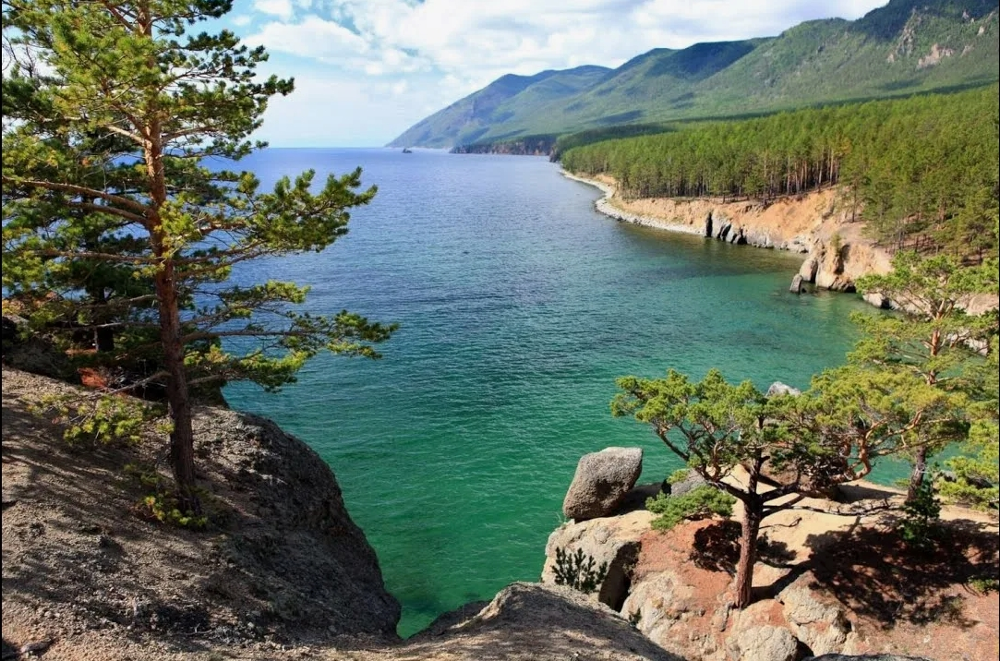
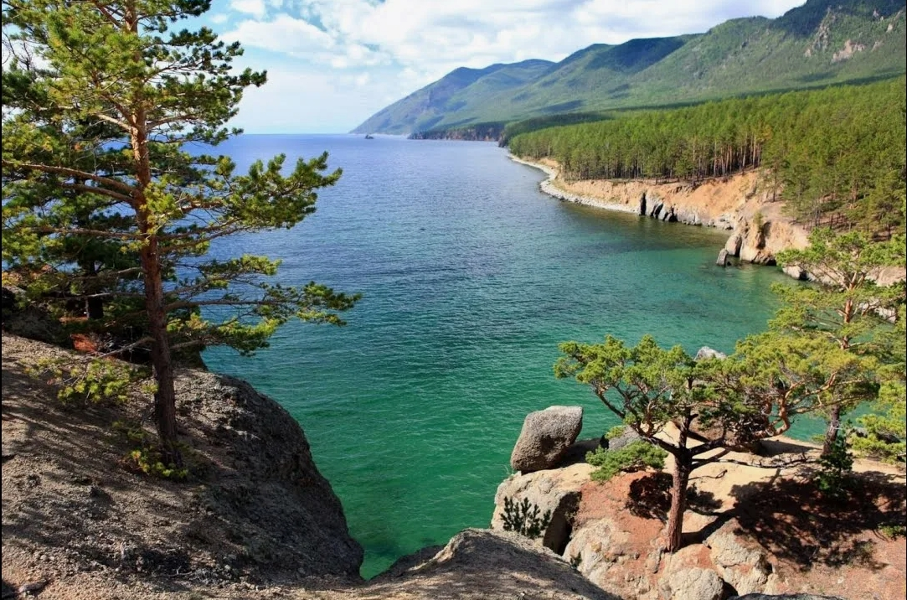
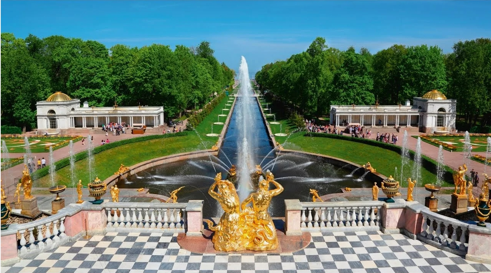
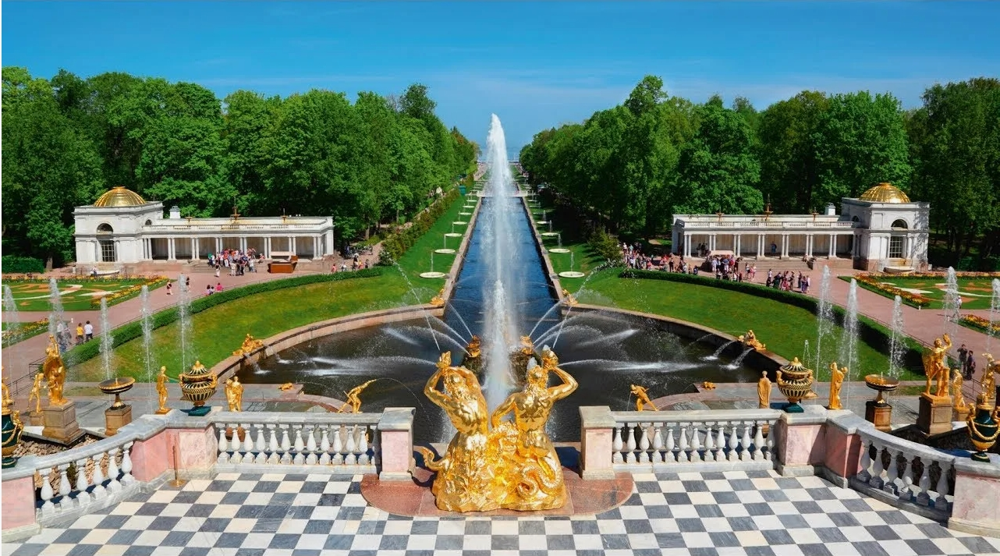

Красная площадь
Сердце Москвы и символ России. Здесь расположены Кремль, Собор Василия Блаженного и Мавзолей Ленина.
Москва
XV век
Россия славится своими уникальными достопримечательностями, которые привлекают туристов со всего мира.
Сердце Москвы и символ России. Здесь расположены Кремль, Собор Василия Блаженного и Мавзолей Ленина.


Один из крупнейших и старейших музеев мира, основанный в 1764 году Екатериной II.

 

Самое глубокое озеро в мире, содержащее 20% мировых запасов пресной воды.
 


Дворцово-парковый ансамбль, созданный Петром I как "русский Версаль".
Май-сентябрь для большинства регионов, декабрь-март для зимних видов отдыха.
Обязательно посетите музеи, попробуйте местную кухню и изучите русскую культуру.